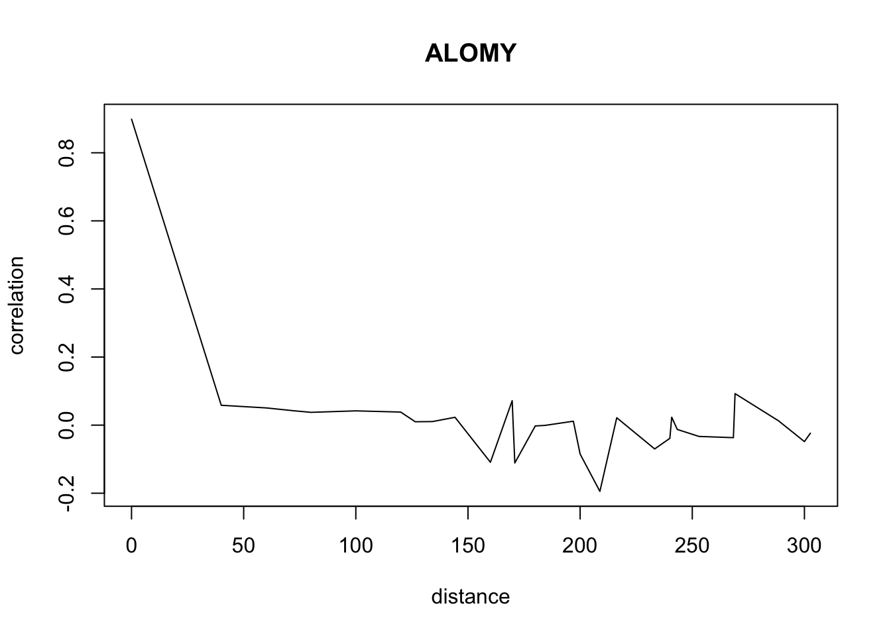
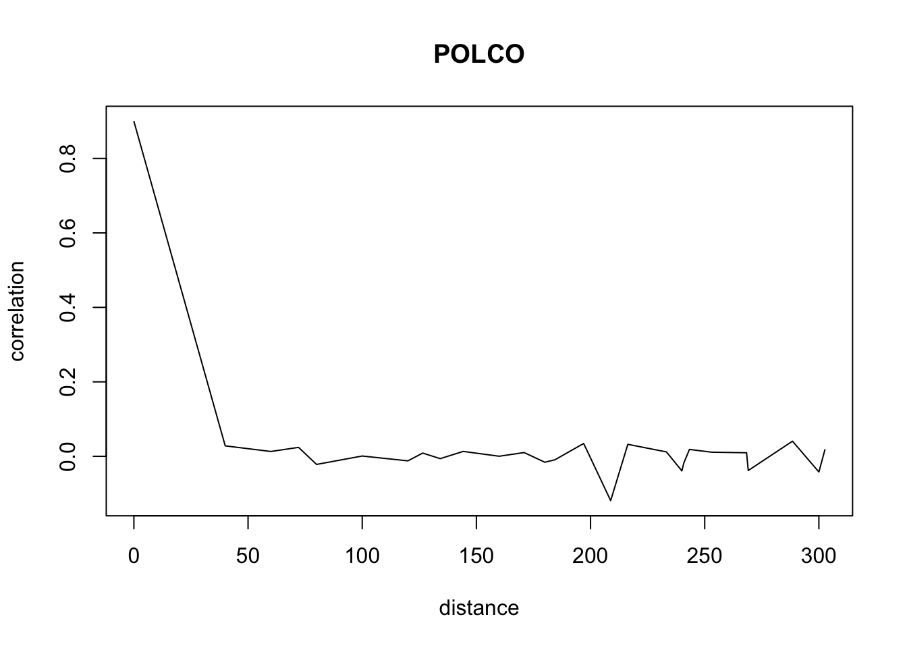
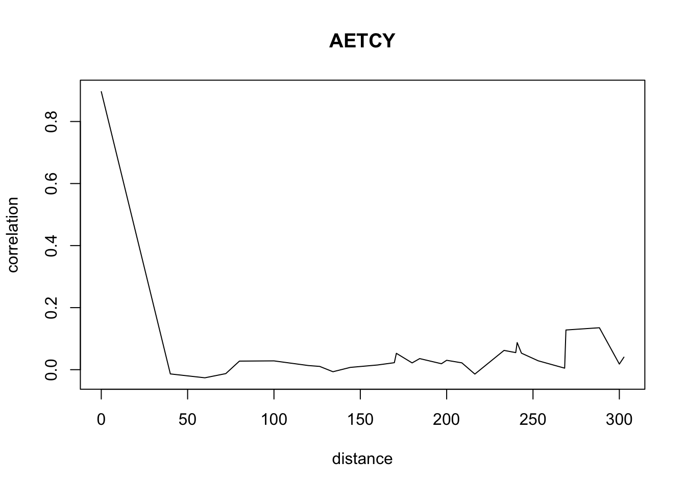
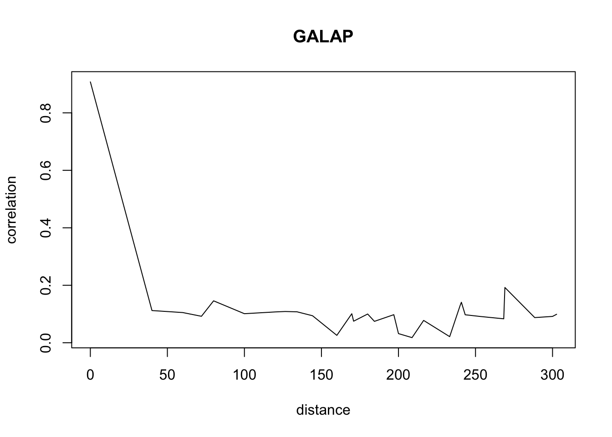
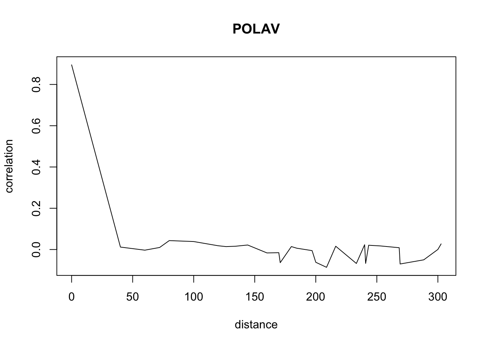

library(doParallel)
library(optimr)set.seed(1)
#Setting the number of states
#K observable states
K=5
#I hidden states
I=5Getting the raw data for the 7 species of the study (density per square meter). Data are from Cordeau, S., Adeux, G., Meunier, D., Strbik, F., Dugué, F., Busset, H., Vieren, E., Louviot, G., & Munier-Jolain, N. (2020). Weed density of 7 major weeds in the long-term integrated weed management cropping system experiment of Dijon-Epoisses (2000-2017), https://doi.org/10.15454/M5P3LM. Portail Data INRAE.
# save(data,file="data_epoisse.Rdata")
load("dat/data_epoisse.Rdata")
# raw data : data[[species]][patch,year]dtstate2=list()
oo=1
classS=list()
for(o in 1:7){
dtstate2[[oo]]=array(rep(0,17*90),dim=c(90,17))
classS[[oo]]=rep(0,K-2)
oo=oo+1
}
names(classS)<-names(data)
names(dtstate2)<-names(data)oo=1
size_of_class=rep(0,length(names(dtstate2)))
for( o in names(dtstate2)){
difference= max(log(data[[o]][which(data[[o]]!=0)]+1))
interval=difference/4
size_of_class[oo]=interval
for(i in 1:90){
for(j in 1:17){
if(data[[o]][i,j]==0){dtstate2[[oo]][i,j]=1
}else if(log(data[[o]][i,j]+1)<interval){dtstate2[[oo]][i,j]=2}
else if(log(data[[o]][i,j]+1)<interval*2){dtstate2[[oo]][i,j]=3}
else if(log(data[[o]][i,j]+1)<interval*3){dtstate2[[oo]][i,j]=4}
else if(log(data[[o]][i,j]+1)>=interval*3){dtstate2[[oo]][i,j]=5}
}
}
oo=oo+1
}
names(size_of_class)<-names(dtstate2)
size_of_class=size_of_class[c("ALOMY","CHEAL","SOLNI",'POLCO','AETCY','GALAP','POLAV')]
size_class_no_log=matrix(rep(0,5*7),nrow=7)
rownames(size_class_no_log)<-c("ALOMY","CHEAL","SOLNI",'POLCO','AETCY','GALAP','POLAV')
for(q in 1:7){
size_class_no_log[q,4]=exp(size_of_class[q]*3-1)
size_class_no_log[q,3]=exp(size_of_class[q]*2-1)
size_class_no_log[q,2]=exp(size_of_class[q]-1)
}
size_class_no_log[,5]=rep(10000,7)
# dtstate2 gives the states (abundance class of standing flora) for each species in each patch for each year.
# dtstate2[[species]][patch,year]### Load the data if you didn't run the transformation into abundance classes
# save(dtstate2,file='classes_uniforme_PIC_log(+1).Rdata')
load('dat/classes_uniforme_PIC_log(+1).Rdata')#loading cultd
#cultd gives the crop type for each patch each year between winter and summer.
#1=winter 2=summer
load('dat/culture_epoisse_binaire.Rdata')
#loading diszon
load('dat/distance_entre_les_patchs.Rdata')
#missing data in patchs 64 and 74
index_patch_with_missing_info=c(64,71)You can directly go at the end of step 2 and load the results from Rdata files.
diszone2=diszone[-index_patch_with_missing_info,-index_patch_with_missing_info]
correlation_results=list()
for(speci in c("ALOMY","CHEAL","SOLNI",'POLCO','AETCY','GALAP','POLAV')){
keepcor=array(rep(0,88*88),dim=c(88,88))
corecol=array(rep(0,88*16*88),dim=c(16,88,88))
nbr=0
data1=data[[speci]][-index_patch_with_missing_info,]
for(k in 1:88){
corecol[,,k]=t(data1[,2:17])
corecol[,k,k]=t(data1[k,1:16])
keepcor[k,]=cor(corecol[,,k])[k,]
}
for(i in 1:88){
for(j in 1:88){
if(is.na(keepcor[i,j])){keepcor[i,j]=0}
}}
for(i in 1:88){
for(j in 1:88){
if(i>j){diszone2[i,j]=-1}
}}
ordr=sort(diszone2)
l=1
corki=list()
k=1
while(l<length(ordr)){
if(l==1||ordr[l]!=ordr[l-1]){
corki[[k]]=c(0,0)
leschamps=which(ordr[l]==diszone2,arr.ind=TRUE)
dd=dim(which(ordr[l]==diszone2,arr.ind=TRUE))[1]
cumm=0
for(oo in 1:dd ){
cumm= keepcor[leschamps[oo,1],leschamps[oo,2]] +cumm + keepcor[leschamps[oo,2],leschamps[oo,1]]
}
corki[[k]]=c(cumm/(2*dd),ordr[l])
names(corki[[k]])<-c('mean correlation','between patches distance')
k=k+1
}else{}
l=l+1
}
correlation_results[[speci]]<-corki
}Don’t pay attention to the warnings. The warnings appear because we have less and less data when distance increases so we have a standard deviation of 0 sometimes.
suitcor<-list()
suitdist<-list()
plotlist<-list()
#fast plotting of the correlation results
for(o in c("ALOMY","CHEAL","SOLNI",'POLCO','AETCY','GALAP','POLAV') ){
for(i in 1: 50){
suitcor[i]<- correlation_results[[o]][[i]][1]
suitdist[i]<- correlation_results[[o]][[i]][2]
}
plot(suitdist[2:30],suitcor[2:30],type='l',xlab='distance',ylab=c('correlation'),main=c(o))
}
Load the data if you didn’t ran the correlations computation
#save(correlation_results,file="correlation_results.Rdata")
load(file="dat/correlation_results.Rdata")Running time is long, 2-4 days ! You can directly go at the end of step 3 and load the results from Rdata files.
#code used for the estimation of the MHMMDF model
source('code/EM-MHMM-DF-moy-inter.R')#running estimations in parallel
nbr=3
#3 cores
registerDoParallel(nbr)
diszone3=diszone[-index_patch_with_missing_info,-index_patch_with_missing_info]
cultd3=cultd[-index_patch_with_missing_info,]
dtstate9=list()
#missing data in patchs index_patch_with_missing_info
for( o in names(dtstate2)){
dtstate9[[o]]=dtstate2[[o]][-index_patch_with_missing_info,]
}
#only 88 patchs as we deleted 2 due to missing data
CC=88
etatA9=list()
for(o in c("ALOMY","CHEAL","SOLNI",'POLCO','AETCY','GALAP','POLAV')){
etatA9[[o]]=array(rep(0,17*88),dim=c(88,17))
for(c in 1:CC){
etatA9[[o]][c,]=field_to_vect_dist(c,dtstate9[[o]],K,diszone3)}}
#etatA9 gives the neighbors states
#two estimations: one with culture effect, the other one without
p = 100 #number max of EM iterations
for(variable_para_cult in 1:2)
{
ACSP3=list()
if(variable_para_cult==1){ culture_des_champs=matrix(rep(1, dim(cultd3)[1]* dim(cultd3)[2]), dim(cultd3))}else{ culture_des_champs=cultd3}
for(o in c("ALOMY","CHEAL","SOLNI",'POLCO','AETCY','GALAP','POLAV')){
difsim=foreach(i=1:8) %dopar% EM_cult_dist_zi_neg(dtstate9[[o]][,1:16],etatA9[[o]][,1:16],CC,K,I,p,culture_des_champs[,1:16],culture_des_champs[,17],diszone3)
print(o)
#EM_cult_dist_zi_neg is the function used taking a long time
vrai=-Inf
for( j in 1:8){
if(as.vector(difsim[[j]]$Vrai[2]) > vrai)
{
ACSP3[[o]]=difsim[[j]]
vrai=difsim[[j]]$Vrai[2]
}
}
}
if(variable_para_cult==1){
ACSP_nocult=ACSP3
}else{ ACSP_cult=ACSP3 }}Save the results of model parameters estimates (nu, mu and tau)
#save(ACSP_cult,file="EstimateurMHMMDF_cult_25_02_2020.Rdata")
#save(ACSP_nocult,file="EstimateurMHMMDF_25_02_2020.Rdata")ACSP=ACSP_cult
ACSP=ACSP_nocultLoad the data if you didn’t ran the parameters estimation
load(file='dat/EstimateurMHMMDF_cult_25_02_2020.Rdata')
load(file='dat/EstimateurMHMMDF_25_02_2020.Rdata')ACSP_cult contains the estimates of the MHMM-DF model with crop seasonality. ACSP_cult is used to compute (with step 4) the values in the table ‘Tableau des probabilités de survie et de sortie de dormance pour le modèle MHMM-DF qui tient compte de la saison de la culture locale’.
ACSP_nocult contains the estimates of the MHMM-DF model without crop seasonality. ACSP_nocult is used to compute (with step 4) the values in the table ‘Tableau des probabilités de survie, de colonisation et de sortie de dormance pour le modèle non spatialisé et pour le MHMM-DF’
Run time slow 1 day ! You can directly go at the end of step 4 and load the results from Rdata files.
Estimateur_cult=ACSP_cult
Estimateur=ACSP_nocultN = 100 # number of time steps in one simulation
set.seed(1)
#simulating the species trajectories across 17 years 100 times to get frequencies
#used to calculate the ecological parameter from the model parameters
#(germination, seed survival, colonisation)
#running time is long because 7 species with 3 sets of parameters (winter, summer, none)
#for 17 years done 100 times
for(w in 1:2){
if(w== 1){
ACSP = Estimateur_cult}
else{
ACSP = Estimateur}
nombrecol=dim(ACSP[[1]]$paramestim$estimalpha)[2]
lengspecie = length(c("ALOMY","CHEAL","SOLNI",'POLCO','AETCY','GALAP','POLAV'))
freqX=array(rep(0,5*lengspecie*nombrecol),dim=c(lengspecie,5,nombrecol))
freqY=array(rep(0,5*lengspecie*nombrecol),dim=c(lengspecie,5,nombrecol))
rownames(freqX)<-c("ALOMY","CHEAL","SOLNI",'POLCO','AETCY','GALAP','POLAV')
colnames(freqX)<-c('extinction','etat 2','etat 3','etat 4','etat 5')
freqXX=array(rep(0,5*lengspecie*nombrecol),dim=c(lengspecie,5,nombrecol))
freqY=array(rep(0,5*lengspecie*nombrecol),dim=c(lengspecie,5,nombrecol))
rownames(freqXX)<-c("ALOMY","CHEAL","SOLNI",'POLCO','AETCY','GALAP','POLAV')
colnames(freqXX)<-c('extinction','etat 2','etat 3','etat 4','etat 5')
rownames(freqY)<-c("ALOMY","CHEAL","SOLNI",'POLCO','AETCY','GALAP','POLAV')
colnames(freqY)<-c('extinction','etat 2','etat 3','etat 4','etat 5')
for(hivete in 1 : nombrecol){
print(hivete)
for(z in 1:100){
if(z%%10==0){print(z)}
for(e in 1:lengspecie){
C=88
phi=ZIphi(ACSP[[e]]$paramestim$estimbeta[,hivete],I,K)
A2=funcA_moy(ACSP[[e]]$paramestim$estimalpha[,hivete],I,K,C)
pi=funcpi(ACSP[[e]]$paramestim$estimgamma,I)
dist=diszone3
for(q in 1:20){
X= array(rep(0,C*(N+1)),dim=c(C,N+1))
Y= array(rep(0,C*(N+1)),dim=c(C,N))
#simulation with A2
t=runif(1)
X[,1]=length(which(cumsum(pi)<t))+1
for(i in 1:N){
for(c in 1:C){
l= runif(1)
if(l<phi[X[c,i],1]){ Y[c,i]=1
} else if(l <phi[X[c,i],1]+ phi[X[c,i],2]){ Y[c,i]=2
} else if(l <phi[X[c,i],1]+ phi[X[c,i],2]+ phi[X[c,i],3]){ Y[c,i]=3
} else if(l <phi[X[c,i],1]+ phi[X[c,i],2]+phi[X[c,i],3]+phi[X[c,i],4]){ Y[c,i]=4
} else { Y[c,i]=5}
}
for(c in 1:C){
f=field_to_vect_dist(c,Y[,i],K,dist)
R= runif(1)
if(R<A2[X[c,i],1,f]){ X[c,i+1]=1
} else if(R <A2[X[c,i],1,f]+ A2[X[c,i],2,f]){ X[c,i+1]=2
} else if(R <A2[X[c,i],1,f]+ A2[X[c,i],2,f]+ A2[X[c,i],3,f]){ X[c,i+1]=3
} else if(R <A2[X[c,i],1,f]+ A2[X[c,i],2,f]+A2[X[c,i],3,f]+A2[X[c,i],4,f]){ X[c,i+1]=4
} else{ X[c,i+1]=5}
}
}
for(i in 1:N){
y0=which(Y[,i]==1)
for(c in y0){
if(X[c,i]==1){
freqY[e,1,hivete]=freqY[e,1,hivete]+length(which(field_to_vect_dist(c,Y[,i],K,dist)%%K==1))
freqY[e,2,hivete]=freqY[e,2,hivete]+length(which(field_to_vect_dist(c,Y[,i],K,dist)%%K==2))
freqY[e,3,hivete]=freqY[e,3,hivete]+length(which(field_to_vect_dist(c,Y[,i],K,dist)%%K==3))
freqY[e,4,hivete]=freqY[e,4,hivete]+length(which(field_to_vect_dist(c,Y[,i],K,dist)%%K==4))
freqY[e,5,hivete]=freqY[e,5,hivete]+length(which(field_to_vect_dist(c,Y[,i],K,dist)%%K==0))}
if(field_to_vect_dist(c,Y[,i],K,dist)%%K==1){
freqXX[e,1,hivete]=freqXX[e,1,hivete]+length(which(X[c,i]==1))
freqXX[e,2,hivete]=freqXX[e,2,hivete]+length(which(X[c,i]==2))
freqXX[e,3,hivete]=freqXX[e,3,hivete]+length(which(X[c,i]==3))
freqXX[e,4,hivete]=freqXX[e,4,hivete]+length(which(X[c,i]==4))
freqXX[e,5,hivete]=freqXX[e,5,hivete]+length(which(X[c,i]==5))}
}
}
freqX[e,1,hivete]=freqX[e,1,hivete]+length(which(X==1))
freqX[e,2,hivete]=freqX[e,2,hivete]+length(which(X==2))
freqX[e,3,hivete]=freqX[e,3,hivete]+length(which(X==3))
freqX[e,4,hivete]=freqX[e,4,hivete]+length(which(X==4))
freqX[e,5,hivete]=freqX[e,5,hivete]+length(which(X==5))
}
}}}
zziii<-list()
AAAAAAQ<-list()
AAAAAAQQ<-list()
for(po in 1 : nombrecol){
zziii[[po]]=(freqX[,,po]/rowSums(freqX[,-1,po]))[,-1]
AAAAAAQ[[po]]= (freqX[,,po]/rowSums(freqX[,-1,po]))[,-1]
AAAAAAQQ[[po]]= (freqX[,,po]/rowSums(freqX[,-1,po]))
}
survi=array(rep(0,lengspecie*nombrecol),dim=c(lengspecie,nombrecol))
colon_moy=array(rep(0,lengspecie*nombrecol),dim=c(lengspecie,nombrecol))
colon=array(rep(0,lengspecie*nombrecol),dim=c(lengspecie,nombrecol))
floreleve=array(rep(0,lengspecie*nombrecol),dim=c(lengspecie,nombrecol))
rownames(colon)<-c("ALOMY","CHEAL","SOLNI",'POLCO','AETCY','GALAP','POLAV')
rownames(colon_moy)<-c("ALOMY","CHEAL","SOLNI",'POLCO','AETCY','GALAP','POLAV')
rownames(floreleve)<-c("ALOMY","CHEAL","SOLNI",'POLCO','AETCY','GALAP','POLAV')
probY=array(rep(0,lengspecie*5*nombrecol),dim=c(lengspecie,5,nombrecol))
rownames(probY)<-c("ALOMY","CHEAL","SOLNI",'POLCO','AETCY','GALAP','POLAV')
eAAAAAAQQ=array(rep(0,lengspecie*4*nombrecol),dim=c(lengspecie,4,nombrecol))
rownames(survi)<-c("ALOMY","CHEAL","SOLNI",'POLCO','AETCY','GALAP','POLAV')
if(nombrecol==2 ){
colnames(survi)<-c('Winter','Summer')
colnames(colon)<-c('Winter','Summer')
colnames(colon_moy)<-c('Winter','Summer')
colnames(floreleve)<-c('Winter','Summer')
}
else{}Once the simulations are done we can calculate the seed survival, the colonisation and the germination
for(hivete in 1 : nombrecol){
for(e in 1 : lengspecie){
C=88
zziii[[hivete]][e,]=ZIphi(ACSP[[e]]$paramestim$estimbeta[,hivete],I,K)[-1,(-2:-5)]
AAAAAAQ[[hivete]][e,]= funcA_moy(ACSP[[e]]$paramestim$estimalpha[,hivete],I,K,C)[-1,(-2:-5),1]
survi[e,hivete]=(1-((diag(AAAAAAQ[[hivete]]%*%t((freqXX[,,hivete]/rowSums(freqXX[,-1,hivete]))[,-1]))))/(funcA_moy(ACSP[[e]]$paramestim$estimalpha[,hivete],I,K,C)[1,1,1]))[e]
AAAAAAQQ[[hivete]][e,]= funcA_moy(ACSP[[e]]$paramestim$estimalpha[,hivete],I,K,C)[1,1,1:5]
colon_moy[e,hivete]=(1-(diag(AAAAAAQQ[[hivete]]%*%t((freqY[,,hivete]/rowSums(freqY[,,hivete]))))))[e]
floreleve[e,hivete]= (1- (diag(zziii[[hivete]]%*%t(freqX[,-1,hivete]/rowSums(freqX[,-1,hivete])))))[e]
probY[e,,hivete]=(freqX[,,hivete]/rowSums(freqX[,,hivete]))[e,]%*%ZIphi(ACSP[[e]]$paramestim$estimbeta[,hivete],I,K)
eAAAAAAQQ[e,,hivete]= funcA_moy(ACSP[[e]]$paramestim$estimalpha[,hivete],I,K,C)[1,(-2:-5),2:5]
colon[e,hivete]=(1-(diag(eAAAAAAQQ[,,hivete]%*%t((freqY[,,hivete]/rowSums(freqY[,-1,hivete]))[,-1]/(funcA_moy(ACSP[[e]]$paramestim$estimalpha[,hivete],I,K,C)[1,1,1])))))[e]
}}
if(nombrecol==2 ){
results_culture<-list()
results_culture$seed_survival<-survi
results_culture$colonisation_voisin<-colon
results_culture$colonisation_moy<-colon_moy
results_culture$germination<-floreleve
results_culture$probY<-probY
results_culture$eAAAAAAQQ<-eAAAAAAQQ
results_culture$AAAAAAQ<-AAAAAAQ
results_culture$zziii<-zziii
results_culture$AAAAAAQQ<-AAAAAAQQ
results_culture$freqX<-freqX
results_culture$freqXX<-freqXX
results_culture$freqY<-freqY
#save(results_culture,file="EstimateurMHMMDF_ecoparams_cult_25_02_2020.Rdata")
load(file="dat/EstimateurMHMMDF_ecoparams_cult_25_02_2020.Rdata")
}else{
results_no_cult<-list()
results_no_cult$seed_survival<-survi
results_no_cult$colonisation_voisin<-colon
results_no_cult$colonisation_moy<-colon_moy
results_no_cult$germination<-floreleve
results_no_cult$probY<-probY
results_no_cult$eAAAAAAQQ<-eAAAAAAQQ
results_no_cult$AAAAAAQ<-AAAAAAQ
results_no_cult$zziii<-zziii
results_no_cult$AAAAAAQQ<-AAAAAAQQ
results_no_cult$freqX<-freqX
results_no_cult$freqXX<-freqXX
results_no_cult$freqY<-freqY
#save(results_no_cult,file="EstimateurMHMMDF_ecoparams_25_02_2020.Rdata")
load(file="dat/EstimateurMHMMDF_ecoparams_25_02_2020.Rdata")
}Load the data if you didn’t ran the parameters estimation
load(file="dat/EstimateurMHMMDF_ecoparams_25_02_2020.Rdata")
load(file="dat/EstimateurMHMMDF_ecoparams_cult_25_02_2020.Rdata")results_culture gives the germination, seed survival, and colonisation for the MHMM-DF model with crop seasonality. results_culture is used in the table ‘Tableau des probabilités de survie et de sortie de dormance pour le modèle MHMM-DF qui tient compte de la saison de la culture locale’.
results_no_cult gives the germination, seed survival, and colonisation for the MHMM-DF model without crop seasonality. results_no_cult is used in the table ‘Tableau des probabilités de survie, de colonisation et de sortie de dormance pour le modèle non spatialisé et pour le MHMM-DF’.
Running time is fast 1 min ! You can directly go at the end of step 5 and load the results from Rdata files.
## Load Mathieu Pluntz's estimation code
source('code/Markov chain parameters functions.R')
source('code/EM functions.R')set.seed(1)
done=list()
d=1
for(sp in names(dtstate2)){
done[[sp]]=list()
k=1
for(cc in 1 : 88){
if(cc%%9!=0){
temp= dtstate2[[d]][cc,]
temp[which(dtstate2[[d]][cc,]>1)]=1
temp[which(dtstate2[[d]][cc,]==1)]=0
done[[sp]][[k]]=temp
k=k+1
}
}
d=d+1
}
estBI90=list()
for(sp in c("ALOMY","CHEAL","SOLNI",'POLCO','AETCY','GALAP','POLAV')){
estBI90[[sp]]=list()
estBI90[[sp]]=EMestimation(done[[sp]],nIterations = 250)
}
mtrix3=array(rep(0,7*3),dim=c(7,3))
colnames(mtrix3)<-c('g','c','s')
rownames(mtrix3)<-c("ALOMY","CHEAL","SOLNI",'POLCO','AETCY','GALAP','POLAV')
k=1
for(sp in c("ALOMY","CHEAL","SOLNI",'POLCO','AETCY','GALAP','POLAV')){
if(sp=="PLALA"){}else{
mtrix3[k,1]= estBI90[[sp]]$param$g
mtrix3[k,2]= estBI90[[sp]]$param$c
mtrix3[k,3]= estBI90[[sp]]$param$s
}
k=k+1
}Load the data if you didn’t ran the parameters estimation
#save(mtrix3,file="EstimateurPluntz_ecoparams_25_02_2020.Rdata")
load(file="dat/EstimateurPluntz_ecoparams_25_02_2020.Rdata")
mtrix3## g c s
## ALOMY 0.6165487 0.2514397 0.5618822
## CHEAL 0.3310785 0.1479316 0.7922249
## SOLNI 0.3587631 0.1457411 0.7110506
## POLCO 0.6144047 0.1877547 0.8243072
## AETCY 0.5533118 0.1118679 0.7602114
## GALAP 0.5159815 0.1567594 0.7939501
## POLAV 0.5020319 0.1738723 0.5863621mtrix3 gives the germination, seed survival and colonisation for species using Pluntz’s model. mtrix3 is used in table ‘Tableau des probabilités de survie, de colonisation et de sortie de dormance pour le modèle non spatialisé et pour le MHMM-DF’.